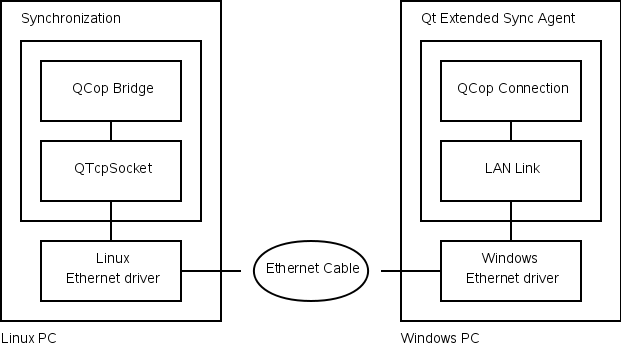

|
Qt Extended Home · Index · Classes · Headers · Overviews | |
Here is a depiction of a Greenphone connecting to Qt Extended Sync Agent on a Linux PC using TCP/IP. This can't be done on Windows due to the lack of a driver.

Here is a depiction of a Linux PC running Qt Extended connecting to Qt Extended Sync Agent on a Windows PC using TCP/IP. This can't be done on a Greenphone because it lacks an Ethernet port. This is is a useful configuration for pre-integration testing because it does not require specialized hardware.

Ensure the QDSYNC_DEFAULT_PORTS define includes "tcp".
You must provide a Linux driver that implements a network interface. On the Greenphone (2.4 kernel) there is the net_fd driver. This driver works with Linux PCs running 2.4 and 2.6 kernels but there does not seem to be any Windows drivers available for it. Running a newer (2.6) kernel on your device means you can use the gadget interface, which seems to have better Windows driver support.
If you are connecting via Ethernet there should be a standard driver available.
Ensure the LAN plugin has not been disabled.
If your device is connecting via USB, you will need a driver. The Greenphone uses the net_fd driver which works with Linux PCs. There does not seem to be a Windows driver available. Running a newer (2.6) kernel on your device means you can use the gadget interface, which seems to have better Windows driver support.
If you are connecting via Ethernet there should be a standard driver available.
When using TCP/IP it is Qt Extended Sync Agent that connects to Qt Extended so you must provide the hostname or IP address of the device running Qt Extended. You will find this on the Settings dialog under Plugin Settings -> LAN Link.
See also Integration Tasks.
| Copyright © 2009 Trolltech | Qt Extended Sync Agent Documentation |